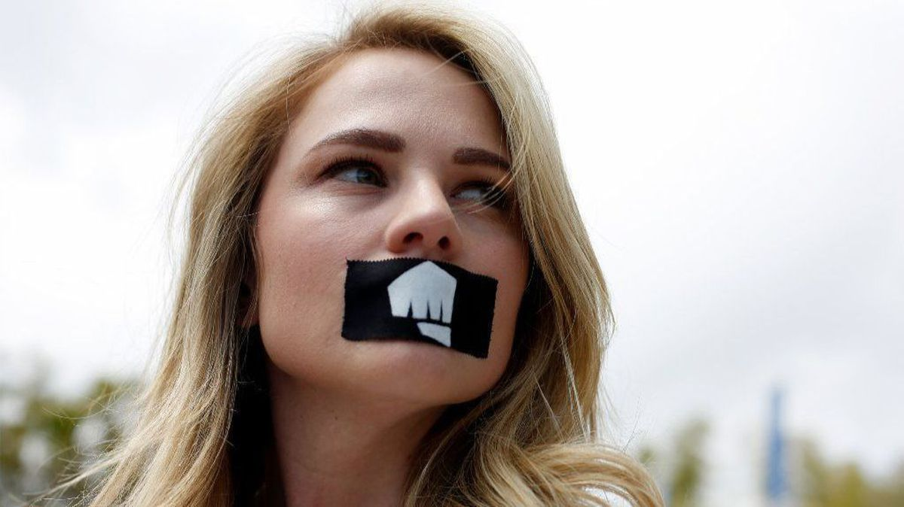
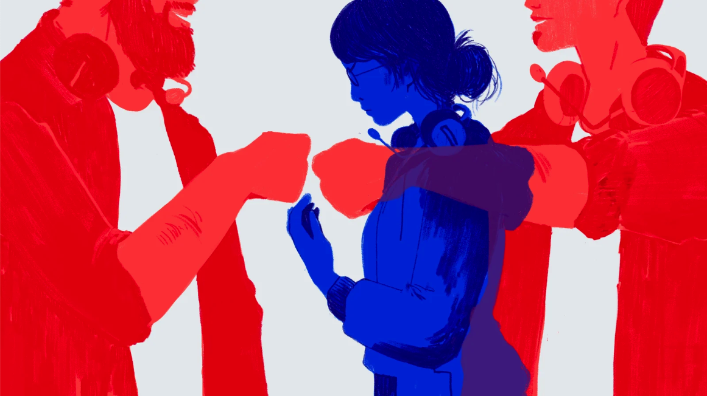
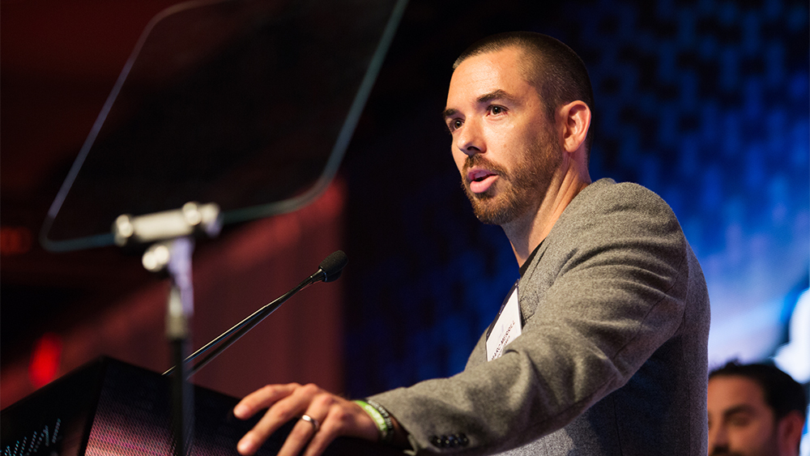
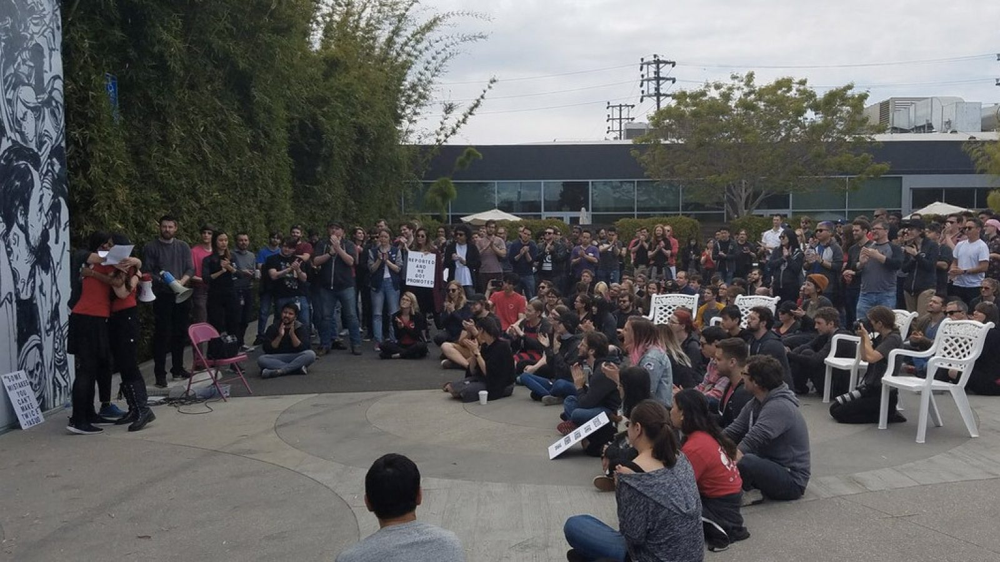
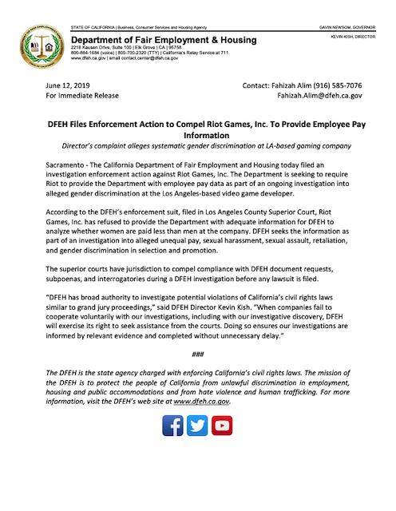

Riot Games & League of Legends: A History of Developer Abuse.

(Jessica Kent joins a walkout at Riot Games in protest of the company's move to force arbitration on two sexual harassment lawsuits. Kent is one of the two plaintiffs in suits against Riot Games. Caption and Image via Dania Maxwell / Los Angeles Times).
Why we need to look at riot games
In August of 2018, Cecilia D'Anastasio released an investigation report for Kotaku that covered a mix of 28 anecdotes from former and current Riot Games employees. The majority of employees that gave statements to Kotaku consistently referenced examples of gender-based discrimination and sexual harassment, with almost every employee commenting on Riot's "agonizingly real" bro culture. One employee even referred to working at Riot to be like "working at a giant fraternity" (to help solidify this analogy, Kotaku used driver's license records to determine that around 80% of Riot's employees are men). Their work environment is uncomfortably coded with a dose of stereotypical masculinity, with both male and female employees reporting several instances sexual harassment and generally inappropriate behavior from bosses and colleagues. Riot's recruitment process features the same male-coded connotations, with hiring managers being said to have told female interviewees that they did not have the "grit" for a certain position or that they were not "gamer" enough, a term commonly used to exclude women in both professional and informal male gaming spaces. If you decide to question whether interviewers were really attempting to discriminate based on gender, an interviewer was also quoted to have asked a female interviewee how big her "e-peen" was. Male employees who had interviewed for similar positions told one female interviewee that "the tone" and content in "her interview would have never happened were she a man," stating they did not experience the same abuse.

(Image via Kotaku, illustrated by Chelsea Beck.)
Riot's hiring page—until they edited it in June 2018 while Kotaku was still reporting—even directly stated "we want passionate gamers who are talented professionals...loving what you do is mandatory, and you won’t fully appreciate a gamer’s perspective unless you are one. We’re not looking for the feedback averse. You need conviction, passion, and horsepower to excel at Riot.” The lines were changed to say, “whatever you play, if you make time to play, you’re a gamer,” a much more PR-friendly approach. Riot Co-Founder Marc Merrill has responded to employees questioning sexist behavior in hiring by victim-blaming female employees, asking them "What did the Rioters say when you pointed out how strange that feedback was to them?”—implying that harassment victims should be responsible for confronting sexist behavior themselves (quote from same Kotaku article).
(Riot Games Co-Founder, Marcus "Tryndamere" Merrill. Image via Associated Press (AP).)
Three months after Kotaku released their investigative report, a class action lawsuit (full text available here) was filed against Riot Games. The lawsuit specifically states that “like many of Riot Games’ female employees, Plaintiffs have been denied equal pay and found their careers stifled because they are women. Moreover, Plaintiffs have also seen their working conditions negatively impacted because of the ongoing sexual harassment, misconduct, and bias which predominate the sexually-hostile working environment of Riot Games.” These allegations imply that Riot Games has likely violated California’s Equal Pay Act and any laws that prohibit gender-based discrimination in the workplace. Kotaku released another article written by Cecilia D'Anastasio that critiques the hypocrisy of an apologetic blog post made by Riot after the release of their initial investigative report. It details how Riot planned on improving work conditions and company culture going forward. D'Anastasio states that Riot Games, even after their blog post, had continued to employ many male employees accused of sexual harassment and assault—including COO Scott Gelb who has been accused of "grabbing colleagues’ genitals" (who thus far has only been suspended without pay for two months) and another employee who had consistently been accused of "stifling several women’s careers and verbally harassed them." Additionally, D'Anastasio found that Riot had "brought on Seyfarth Shaw" for legal representation, a firm known for its union-busting history.
As of April 2019, five Riot employees (both former and current) had filed lawsuits against Riot for gender discrimination. However, two of the filed lawsuits are currently being forced into private arbitration by Riot. Riot cites clauses in the employee contracts for the two plaintiffs being forced into arbitration, stating in a document obtained by Kotaku that "there can be no dispute that Plaintiff agreed to arbitration...claims for discrimination, harassment, and retaliation, as well as for wages due, are expressly listed [in the arbitration agreement]. As defined by the National Association of Consumer Advocates, an association of attorneys that fight against abusive business practices, "forced arbitration" occurs when a company "requires a consumer or employee to submit any dispute that may arise to binding arbitration as a condition of employment or buying a product or service. the employee or consumer is required to waive their right to sue, to participate in a class action lawsuit, or to appeal." Several companies have been under scrutiny recently for arbitration practices similar to Riot Games, most notably with Google being forced scrap their existing arbitration policies for all current and future employees after experiencing a walkout 20,000 employees strong in response to them also forcing private arbitration for sexual assault and harassment cases.
Riot's decision to enforce private arbitration—even in extreme cases such as sexual assault—culminated in a Rioter walkout on May 6th of this year with over 150 employees protesting against forced arbitration "for all past, current, and future Riot employees, including contractors and in current litigation." Riot responded with a formal announcement on May 17th, deciding to modify policy to "at a minimum...give new Rioters the option to opt out of arbitration on individual sexual harassment claims" in future cases. This means that Riot will still be attempting to force two of the five Riot employees currently in on-going sexual harassment litigation into private arbitration.
(~150 Riot Employees at May 6th Walkout Demanding Changes to Company Culture and Removal of Forced Arbitration Clauses in Contracts. Image via Kevin Hitt / @Kevin_Hitt on Twitter).
Only a few weeks prior to the writing of this project, the California Department of Fair Employment and Housing (DFEH) filed an investigation enforcement suit against Riot Games in an effort to obtain pay data to determine whether gender-based wage discrimination exists at Riot. Riot, according to a DFEH press release (shown below), has thus far "refused to provide the Department with adeqate information...to analyze whether women are paid less than men at the company." The results of this investigation have yet to be released, but hopefully the outcome will be beneficial for Riot employees and game developer culture on the whole.
(Press Release from the California DFEH. Acquired via the official DFEH website).
Clearly, Riot Games has little consideration for the well-being of their employees and refuses to change its manipulative practices and toxic culture in any legitimately impactful way. Changing policy for future litigation and not future and current litigation shows that Riot is simply trying to avoid the repercussions of their complacency. This is important for analysis on their eSports division, because it sets a precedent for how Riot may deal with similar labor-related issues in the LCS.
But why the North American region?
This decision was much more subjective and is based more on personal restrictions than anything else. North America is Definitely Not the only region that experiences labor abuse and is Definitely Not perfectly representative of labor struggles in all of Professional LoL play. Unfortunately, I am only able to read eSports content written in the English-language, as well as have the most experience watching and learning about North American LoL eSports and U.S. labor law. The choice of North America is not to argue that issues in the region are relatively more important, rather it is simply the region that I feel I can analyze with the highest amount of accuracy and is also the origin of League of Legends eSports itself.
To give some objective justification, the North American eSports industry does lead all global eSports revenues with a Newzoo-estimating North America to have generated $345 million in revenue in 2018, accounting for 38% of all 2018 global eSports revenues. While this does not make labor issues in North America more important, it does make them more influential in terms of whether eSports gains legitimacy and whether the eSports industry continues to receive investment. The more risk involved in a market, the more hesitant investors are to continue developing the industry. It is also one of the largest regions that does not currently have an effective regulatory body that oversees eSport developers and broadcasting organizations. The International Olympics Committee (IOC) has made statements that eSports could be considered for inclusion, if the industry were able to comply "with the rules and regulations of the Olympic movement." If the North American region continues to lag behind eSports regulation standards and perpetuate fragmented eSport markets with unacceptable labor conditions, it is unlikely that eSports will have enough legitimacy and lobbying power to reach Olympic recognition.
Riot Games and eSports: Legitimate Generalization
While this is not an identical situation to the labor issues in Riot's LCS division, it serves as generalizable precedent for the type of conduct we can likely expect from Riot in future negotiations with players and teams. Riot Games clearly has a history of taking advantage of workers, with the intention of preventing litigation and union-formation to protect their image and maintain toxic male-coded "gamer" culture in their workplace. With these sentiments kept in mind, Riot's unhealthy power dynamics and union-busting tactics in the context of LCS players will be analyzed in the following section.